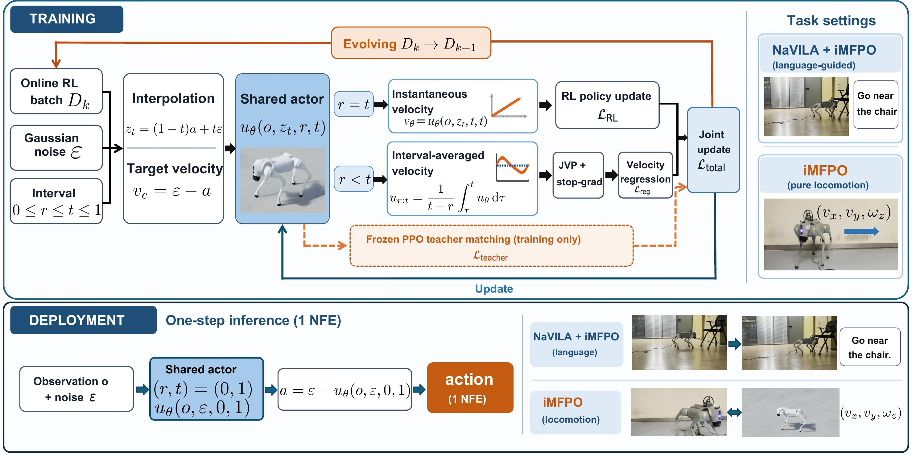

Method
iMFPO generates each action in one network evaluation using a learned interval-averaged velocity.

Sim2Real Locomotion
Compare each Go2 command in simulation and on the physical robot. Each clip plays independently at its recorded speed.
Forward and backward
Lateral movement
Turning
BibTeX
@misc{pan2026imfpo,
title = {{iMFPO}: Improving Mean Flow Policy Optimization with Drift-Aware Velocity Alignment for Embodied Control},
author = {Pan, Lisiyu and Huang, Ting and Zhang, Zeyu and Tang, Hao},
year = {2026}
}